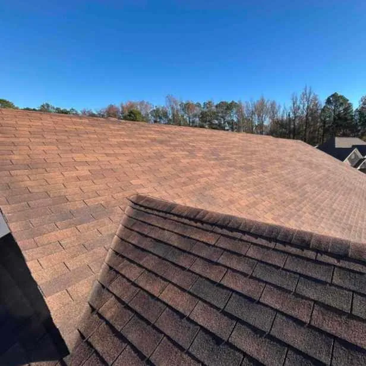

When I needed a roof replacement in Cabot, AR, I learned that most new roofs in Arkansas cost between $8,000 and $15,000, depending on materials and roof size. EZ Roofing helped me inspect my roof, understand the costs, and replace it through my insurance. Get a Free Roof Inspection today!
How I Knew It Was Time To Replace My Roof
At first, I just noticed a few curled shingles and a small water stain in the ceiling of my hallway. I thought a quick patch would take care of it, but after another heavy rain, water started dripping near my attic access. My home was built in the early 2000s, so I knew the original roof was nearing the end of its lifespan.
A neighbor recommended EZ Roofing, a local roofing company known for being honest and easy to work with. I scheduled a free inspection, and one of their specialists came out the next day. They used a detailed checklist to look over the roof and showed me pictures of missing shingles, granule loss, and even a few soft spots in the decking. Repairing just a few sections wouldn’t have solved the larger problem. It was time for a full roof replacement.
What I Learned About Roof Replacement Costs In Arkansas
I’d seen people post about roof prices online, but I wanted real numbers for Cabot. The team at EZ Roofing explained that most residential roofing projects here cost between $8,000 and $15,000. The final price depends on a few things:
- Roof Size and Slope: My roof wasn’t very steep, so labor costs were reasonable.
- Materials: I chose architectural shingles because they hold up better against Arkansas weather and look great.
- Decking Repairs: A few areas under the old shingles were soft and needed replacement.
- Disposal Fees: The old shingles and underlayment had to be hauled off.
EZ Roofing walked me through every cost line by line. There were no surprises, and they helped me figure out how much of the replacement my insurance would cover because the damage was partly storm-related.
The Roof Replacement Process With EZ Roofing
Once I decided to move forward, the process was simpler than I expected. Here’s what happened:
- Inspection and Planning: After the first visit, EZ Roofing put together a written plan that outlined materials, timing, and pricing.
- Insurance Help: They guided me through filing a claim and even met with my insurance adjuster to make sure all damage was documented correctly.
- Material Selection: I picked out the color and type of shingles that matched my home’s exterior.
- Installation: The crew arrived early, protected my landscaping, and tore off the old shingles. They replaced the underlayment, fixed damaged decking, and installed new drip edges and vents.
- Cleanup and Final Inspection: When they finished, they ran magnets around the yard to pick up nails and walked me through a final 31-point inspection before handing over the warranty.
The whole job took about three days, and I could tell they took real pride in their work.
What I Paid For My Roof Replacement

My roof ended up costing around $12,000, which was right in the middle of the local average. My insurance covered most of it, and I only paid a small deductible out of pocket. EZ Roofing’s honesty about pricing made it much easier to budget.
For anyone else in Cabot, AR, wondering what they might pay:
- Basic asphalt shingles: Around $8,000–$10,000
- Architectural shingles: Around $10,000–$15,000
- Metal roofing: Often $15,000 or more, depending on the home
Every house is different, but that’s the general range for this area.
How Long My Roof Replacement Took
From scheduling to final inspection, everything was done in less than a week. The installation itself took three days, and EZ Roofing coordinated around the weather. They said roof replacements in Cabot usually take one to three days, depending on the size and shape of the roof.
Since Arkansas’s weather can be unpredictable, with hot summers, sudden storms, and humidity, the timing made sense. They said fall is one of the best times for roof installation here because the temperatures help the shingles seal properly.
Why I Chose EZ Roofing Over Other Roofing Contractors
Before hiring anyone, I called a few roofing contractors in the Cabot area. Some wouldn’t give clear estimates over the phone, and others pushed expensive upgrades. EZ Roofing stood out because they focused on what I needed and kept communication simple.
They’re licensed, bonded, and insured, and I liked that they handle residential roofing and exterior updates, like siding and windows. The team kept me informed through every step and treated my home like their own. By the time the final inspection was done, I felt confident that the new roof would hold up well against Arkansas’s tough weather.
Why I’d Recommend EZ Roofing In Cabot, AR
After going through the process myself, I can honestly say EZ Roofing made it easy from start to finish. Their team was transparent about pricing, quick to respond, and genuinely cared about doing a good job.
They explained everything clearly, worked directly with my insurance company, and handled the project with professionalism. I also like that they offer siding, window, and door services, so I can use them again if I decide to update the rest of my home’s exterior.
Get a Free Roof Inspection today!
If your roof is aging, leaking, or showing signs of storm damage, don’t wait for the next big storm to make it worse. Contact EZ Roofing in Cabot, AR, for a free inspection and honest advice about your options.
They’ll inspect your roof, explain potential costs, and help you decide if repair or replacement makes the most sense for your situation. Call EZ Roofing or schedule online to find out how affordable your new roof could be.